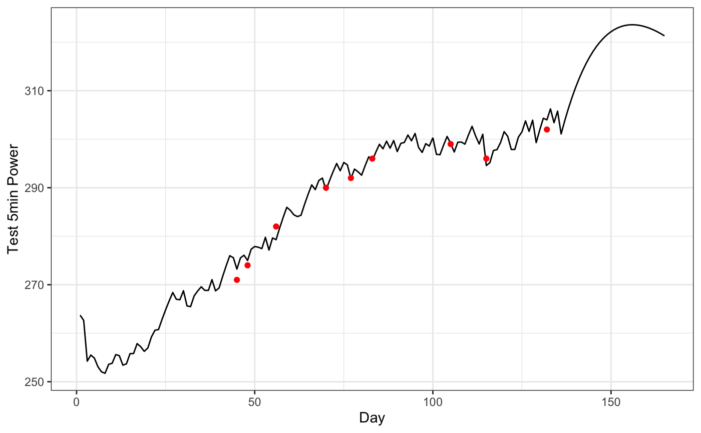

dorem() fits a model.
dorem(x, ...) # S3 method for default dorem(x, ...) # S3 method for data.frame dorem(x, y, ...) # S3 method for matrix dorem(x, y, ...) # S3 method for formula dorem(formula, data, ...) # S3 method for recipe dorem(x, data, ...)
| x | Depending on the context:
|
|---|---|
| ... | Not currently used, but required for extensibility. |
| y | When
|
| formula | A formula specifying the outcome terms on the left-hand side, and the predictor terms on the right-hand side. |
| data | When a recipe or formula is used,
|
A dorem object.
require(tidyverse)#>#>#> ✓ ggplot2 3.3.0 ✓ purrr 0.3.4 #> ✓ tibble 3.0.0 ✓ dplyr 0.8.5 #> ✓ tidyr 1.0.2 ✓ stringr 1.4.0 #> ✓ readr 1.3.1 ✓ forcats 0.5.0#> Conflicts ───────────────────────────────────────────────────────────────────────────────────────────────── tidyverse_conflicts() ── #> x dplyr::filter() masks stats::filter() #> x dplyr::lag() masks stats::lag()data("bike_score") banister_model <- dorem( Test_5min_Power ~ BikeScore, bike_score, method = "banister" )#> fn is fn #> Looking for method = L-BFGS-B #> Function has 5 arguments #> par[ 1 ]: 0 <? 0 <? 300 In Bounds #> par[ 2 ]: 0 <? 1 <? 300 In Bounds #> par[ 3 ]: 0 <? 5 <? 300 In Bounds #> par[ 4 ]: 0 <? 1 <? 300 In Bounds #> par[ 5 ]: 0 <? 5 <? 300 In Bounds #> Analytic gradient not made available. #> Analytic Hessian not made available. #> Scale check -- log parameter ratio= 0.69897 log bounds ratio= 0 #> Method: L-BFGS-B #> iter 10 value 895.484047 #> iter 20 value 474.173105 #> iter 30 value 471.763764 #> iter 40 value 464.052511 #> iter 50 value 457.942448 #> iter 60 value 450.902361 #> iter 70 value 446.841193 #> iter 80 value 439.443886 #> iter 90 value 429.568588 #> iter 100 value 420.459555 #> iter 110 value 417.434300 #> iter 120 value 411.911936 #> iter 130 value 372.485891 #> iter 140 value 346.757036 #> iter 150 value 309.407236 #> iter 160 value 231.149460 #> iter 170 value 138.694435 #> iter 180 value 39.780258 #> iter 190 value 14.272054 #> iter 200 value 7.223372 #> final value 7.223372 #> converged #> Post processing for method L-BFGS-B #> Successful convergence! #> Compute Hessian approximation at finish of L-BFGS-B #> Compute gradient approximation at finish of L-BFGS-B #> Save results from method L-BFGS-B #> $par #> intercept BikeScore.PTE_gain BikeScore.PTE_tau BikeScore.NTE_gain #> 2.389877e+02 2.366773e+02 9.128207e-03 0.000000e+00 #> BikeScore.NTE_tau #> 2.700027e+01 #> #> $value #> [1] 7.223372 #> #> $message #> [1] "CONVERGENCE: REL_REDUCTION_OF_F <= FACTR*EPSMCH" #> #> $convcode #> [1] 0 #> #> $fevals #> function #> 275 #> #> $gevals #> gradient #> 275 #> #> $nitns #> [1] NA #> #> $kkt1 #> [1] FALSE #> #> $kkt2 #> [1] FALSE #> #> $xtimes #> user.self #> 5.974 #> #> Assemble the answersbike_score$pred <- predict(banister_model, bike_score)$.pred ggplot(bike_score, aes(x = Day, y = pred)) + theme_bw() + geom_line() + geom_point(aes(y = Test_5min_Power), color = "red") + ylab("Test 5min Power")#> Warning: Removed 156 rows containing missing values (geom_point).